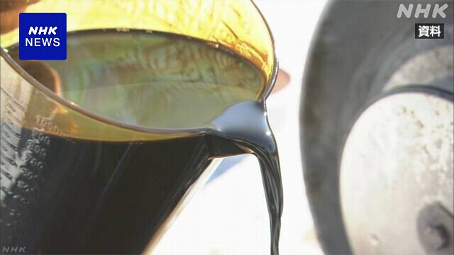
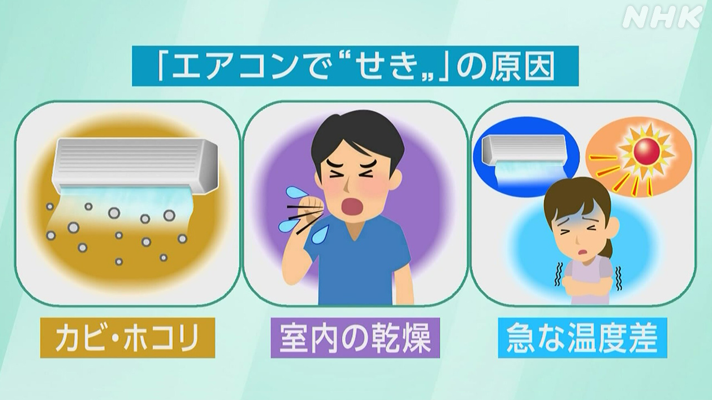

最新ニュース
1️⃣ 4月に中東から輸入した原油 67%少なくなった

アメリカなどとイランの戦いで、原油を運ぶ船が、ホルムズ海峡を通ることが難しくなっています。
国によると、4月、日本が中東から輸入した原油は384万キロリットルでした。去年の4月より67％少なくなりました。
LNGという液体にした天然ガスや、原油からできているナフサなども、中東からの輸入が少なくなりました。LNGが76％、ナフサなどが79％少なくなりました。
中東からの輸入が難しくなったため、日本は、ほかの国から原油などを輸入しています。
アメリカから輸入した原油は、38％増えました。
2️⃣ イトーヨーカ堂 プラスチックの入れ物を減らして売る
スーパーのイトーヨーカ堂は、食べ物などを入れるプラスチックの入れ物を減らすと発表しました。
イランの問題が続いて、原油から作るプラスチックの入れ物の値段が20％ぐらい高くなったためです。
今まで、天ぷらやのりで巻いたすしは入れ物に入れて売っていました。これからは、必要な量だけ客が取って袋などに入れるように変えます。プラスチックの入れ物を減らすためです。
イトーヨーカ堂では「売り方を色々と考えて商品の値段が上がらないようにしたいです」と話していました。
3️⃣ エアコンを使って「せき」が続いている人は気をつけて

暑くなって、エアコンを使い始めて、せきが出るという人がいます。
横浜市の病院の医者によると、この季節は、病院に来る人が増えます。
せきが出る原因は、3つあります。
1つ目は、エアコンの中のカビやほこりです。使う前に、エアコンを掃除してください。
2つ目は、エアコンを長い時間使うと、のどが乾いて、せきが出やすくなります。
部屋の中が乾かないように、部屋の湿度を高くする加湿器などを使ってください。
3つ目は、急に冷たい空気を吸うと、せきが出やすくなります。エアコンの温度を26℃から28℃ぐらいにしてください。
せきが2週間以上続くときなどは、病院に行ってほしいと、医者は話しています。
4️⃣ 山梨県の高原 珍しい「ヒマラヤの青いケシ」が咲いた
「ヒマラヤの青いケシ」と言われる花が、山梨県の清里高原で咲いています。
ヒマラヤの山など3000m以上の高いところに咲く、とても珍しい花です。
暑さに弱いため、涼しい高原にある観光の施設で育てています。
今月15日ごろから咲き始めました。10cmぐらいの大きな青い色の花が、20ぐらい咲いています。
施設の人は「最近はとても暑くなって、育てるのが大変です。たくさんの人に見てほしいです」と話しています。
青いケシの花は、来月14日まで施設で見ることができます。
- 〜こと
- 〜など
- 〜ている / 〜でいる
- 〜によると
- 〜から
- 〜より
- 〜という
- 〜ため
- 〜くらい / 〜ぐらい
- 〜まで
- 〜だけ
- 〜ように
- 〜ようにする
- 〜方
- 〜がある / 〜がいる
- 〜中
- 〜てください / 〜でください
- 〜前に
- 〜やすい
- 〜以上
- 〜ところ
- 〜ても / 〜でも
- 〜ごろ
- 〜ことができる
- 〜てみる
vebaev.github.io
Generated: 2026-05-21 11:30:32 UTC